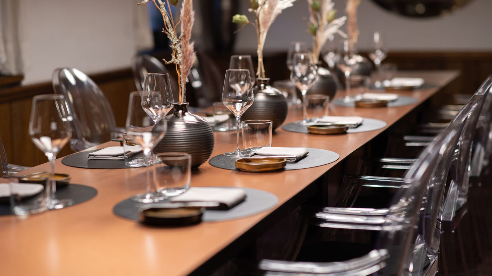

Genussreise
Vom Klassiker bis zum Genussmenü. Sie entscheiden, was und wie viel wovon – groß, klein, von vorn nach hinten und umgekehrt.

Eine kulinarische Gratwanderung zwischen Wirtshaus und Fine Dining – mit sehr viel Leidenschaft, mit Herzblut, mit echter Hingabe.
Hinter den Kulissen ist in den vergangenen Wochen viel entstanden. Neue Speisen. Neue Produzenten. Neue Lieferanten. Neue Weine. Neue Getränke. Und ein neuer Küchenchef: Michael Just. Mit ihm startet auch die neue Genusskarte, die wir bald bekanntgeben.
Reservierungen nehmen wir am liebsten online oder per Mail entgegen. Wir freuen uns auf euren Besuch.
Ein Ort zum Wohlfühlen, Genießen und Ankommen: der Genussort von Manuel Grabner und Claudia Stiglitz im idyllischen Lichtenberg.
Altbewährte Rezepte treffen auf exklusive Gourmet-Erlebnisse und harmonieren trotz – oder gerade wegen – der Gegensätze. In der geradlinigen Küche von Manuel Grabner geht es um ehrliche, unverschnörkelte Gerichte.
Von Mittwoch bis Samstag genießen Sie unser Konzept vom Klassiker bis zum Genussmenü: Die Vielfalt wird hochgehalten und die vier Hauben im Guide Gault&Millau werden so alltagstauglich wie zugänglich präsentiert. Sonntagmittag wird’s traditionell – dann kommt unsere klassische Wirtshauskarte zum Einsatz.

Vom Klassiker bis zum Genussmenü. Sie entscheiden, was und wie viel wovon – groß, klein, von vorn nach hinten und umgekehrt.
Am Sonntag lassen wir die Wirtshaustradition hochleben und servieren klassische Mühlviertler Hausmannskost.
Brettljause, Stelze und Spezialitäten aus der Miele-Outdoorküche – dazu ein gutes Glas Wein oder eines von zwölf Bieren.
Manuel Grabner erkochte davor als Küchenchef im Gourmethotel Rote Wand in Zug bei Lech 2015, 2016 und 2017 jeweils 17 Punkte und drei Hauben im Gault&Millau.
Die Geschichte des 1898 erbauten, ehemaligen Gutshofs wird hochgehalten und bleibt spürbar – wenngleich das heutige Genusszimmer, die Gourmetstube und die Weinkammer durchaus im Jetzt ankommen durften.
Darüber hinaus lädt die freundliche Terrasse zu genussvollen Stunden in der Sonne, und der Kinderspielplatz im Garten ist nicht nur für die Kleinsten gedacht.
Neu eröffnet wurde der Holzpoldl am 1. Juni 2017 von einer mittlerweile vierköpfigen Familie, der die Übernahme eines geschichtsträchtigen Familienbetriebs sympathisch vorkam – eine Entscheidung, die niemals bereut wurde.

| Mittwoch & Donnerstag | 17:00–23:00 Uhr letzte Reservierung 19:30 |
|---|---|
| Freitag | 18:00–23:00 Uhr letzte Reservierung 19:30 |
| Samstag | 11:30–15:00 Uhr letzte Reservierung 13:30 |
| Sonntag | 11:30–15:00 Uhr letzte Reservierung 14:00 |
| Montag & Dienstag | Ruhetag |
| Feiertage | geöffnet |
Am liebsten online oder per Mail – telefonisch selbstverständlich ebenso. Für Gruppen über 15 Personen bitten wir um eine Anfrage per Mail; gerne stellen wir einige Gerichte oder ein spezielles Menü zusammen.
Das wohl wertvollste Gut. Bei uns könnt ihr abtauchen und eine kulinarische Auszeit genießen – so wird ein Gutschein zu einem besonderen Geschenkerlebnis.


